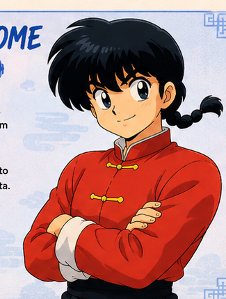
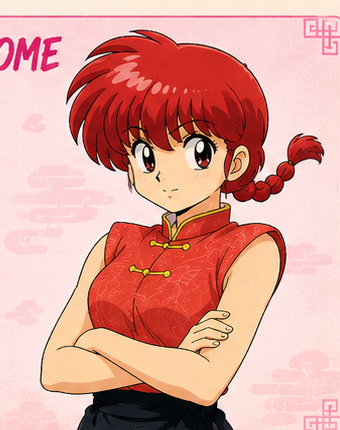
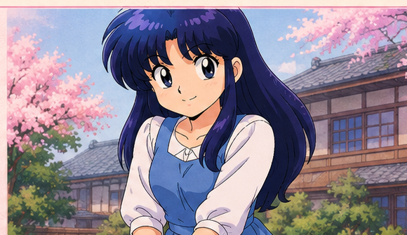

Ranma Saotome
Um jovem especialista em artes marciais. Quando entra em contato com água fria, transforma-se em garota. Com água quente, volta à forma masculina.
Uma história de artes marciais, transformações e amor
Baseado no mangá de Rumiko Takahashi
Ranma ½ acompanha Ranma Saotome, um jovem artista marcial que sofre uma transformação muito incomum depois de cair em uma fonte amaldiçoada durante seu treinamento na China.
Ao lado de Akane Tendo, Ranma vive aventuras cheias de desafios, rivais, confusões amorosas e situações divertidas.
Conheça algumas das pessoas que fazem parte dessa história.

Um jovem especialista em artes marciais. Quando entra em contato com água fria, transforma-se em garota. Com água quente, volta à forma masculina.

A outra forma de Ranma. Apesar da transformação, continua com a mesma personalidade, habilidades e espírito competitivo.

Uma jovem determinada, corajosa e habilidosa em artes marciais. Ela acaba noiva de Ranma por causa de um acordo entre suas famílias.
Do começo ao final do mangá
Acompanhe os principais acontecimentos da jornada de Ranma, Akane e seus amigos, em ordem cronológica.
Ranma Saotome viaja pela China treinando artes marciais com seu pai, Genma. Durante a viagem, os dois chegam a Jusenkyo, um lugar conhecido por suas fontes amaldiçoadas.
Ranma cai na Fonte da Garota Afogada e passa a se transformar em garota ao entrar em contato com água fria. Genma cai na Fonte do Panda Afogado e se transforma em panda. A água quente desfaz temporariamente as transformações.
De volta ao Japão, Ranma e Genma vão morar no dojo da família Tendo. Soun Tendo e Genma possuem um antigo acordo: seus filhos deverão se casar para unir as famílias e os dojos.
Akane é apresentada como a noiva de Ranma. Os dois não ficam felizes com a decisão e começam a discutir, dando início a uma relação cheia de provocações e situações engraçadas.
Ranma reencontra Ryoga Hibiki, um antigo rival que também acaba sofrendo uma maldição de Jusenkyo: quando molhado com água fria, transforma-se em um pequeno porco preto.
Outros personagens entram na história, como Tatewaki Kuno e Kodachi Kuno. As disputas, os mal-entendidos e os desafios de artes marciais passam a fazer parte do cotidiano dos personagens.
Shampoo, integrante da tribo das Amazonas, chega à vida de Ranma depois de acontecimentos envolvendo as tradições de seu povo. Ela acredita que Ranma deve se casar com ela.
Ukyo Kuonji também reaparece na vida de Ranma, trazendo uma antiga promessa de casamento. Com tantas pretendentes e compromissos, a relação entre Ranma e Akane fica ainda mais complicada.
A história apresenta novos desafios e personagens, incluindo Happosai, o antigo mestre de Genma e Soun. Seu comportamento inconveniente provoca muitos problemas.
Ranma continua treinando e aprendendo técnicas especiais, enquanto seus amigos e rivais também se envolvem em competições, viagens e situações absurdas.
Mesmo com as discussões constantes, Ranma e Akane demonstram cada vez mais preocupação um com o outro. O ciúme, a proteção e os momentos de carinho revelam sentimentos que os dois têm dificuldade de admitir.
A família de Ranma também ganha destaque, especialmente com a presença de sua mãe, Nodoka Saotome, que deseja ver o filho cumprir a promessa de se tornar um homem digno e honrado.
Perto do final do mangá, uma ameaça ligada ao Monte Fênix coloca em perigo as fontes de Jusenkyo. Ranma, Akane e seus companheiros partem para a China para enfrentar esse novo desafio.
O grupo encontra Saffron, príncipe do povo das aves. Durante os confrontos, Akane corre grande perigo, e Ranma precisa enfrentar uma das batalhas mais importantes de sua vida.
Na batalha contra Saffron, Ranma luta para salvar Akane e restaurar sua condição. Depois de momentos de grande perigo, os dois conseguem voltar para casa.
Os preparativos para o casamento começam, mas as confusões envolvendo os personagens e as maldições de Jusenkyo atrapalham a cerimônia. O casamento acaba adiado.
No último capítulo, Ranma e Akane aparecem correndo juntos para a escola. A história termina mantendo o humor e o espírito aventureiro que acompanharam a série.
O relacionamento de Ranma e Akane é um dos pontos centrais do mangá. Apesar das brigas, provocações e dificuldades para conversar sobre seus sentimentos, os dois desenvolvem uma ligação especial.
Ao longo da história, eles enfrentam rivais, perigos e situações inesperadas. Muitas vezes, mesmo sem admitir, demonstram que se importam profundamente um com o outro.
Entre discussões, aventuras e momentos de carinho, Ranma e Akane constroem sua própria história.